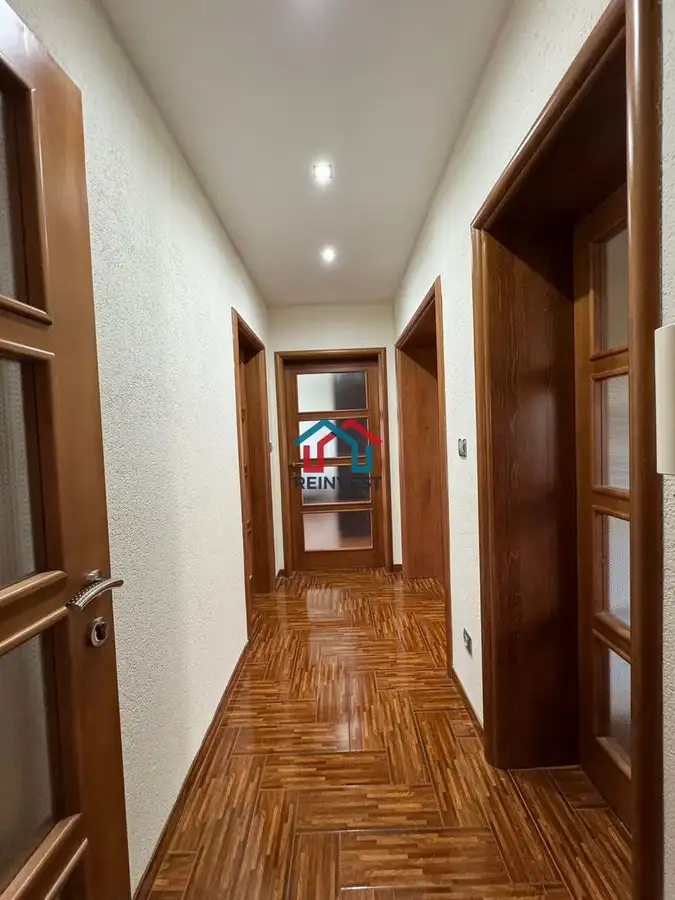
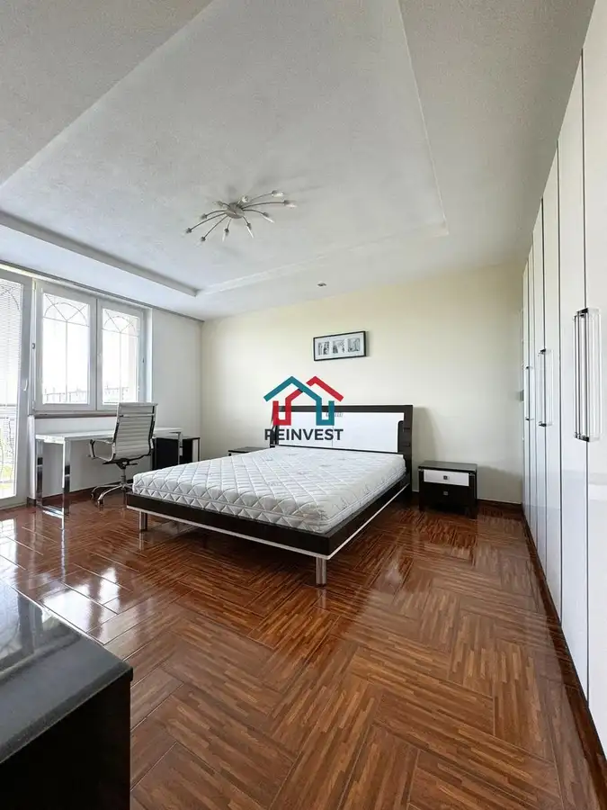
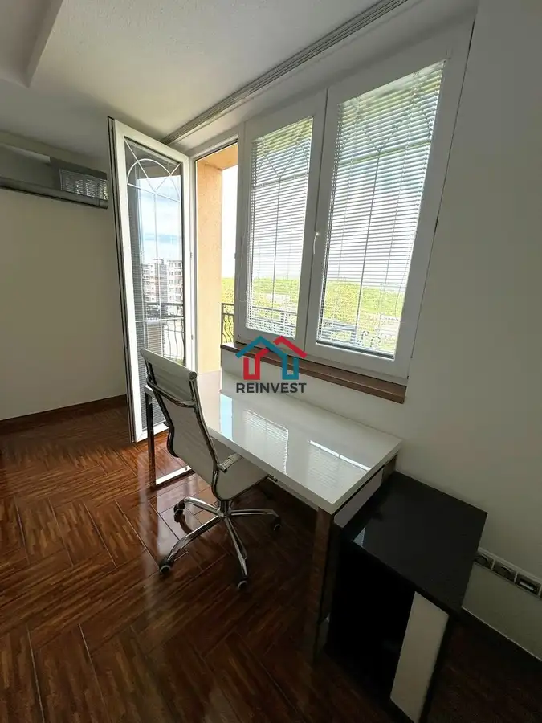

BEZ Provízie - Nadštandardný 4-izbový byt so súkromnou záhradou, krbom a panoramatickým výhľadom – Karlova Ves
Karlova Ves, Bratislava



- Dispozícia4-izbový
- Plocha230 m²
- Poschodie2. z 3
- StavKompletná rekonštrukcia
- VlastníctvoOsobné
O nehnuteľnosti
REINVEST s.r.o. Vám exkluzívne ponúka na prenájom nadštandardný, klimatizovaný 4-izbový byt so súkromnou záhradou a panoramatickým výhľadom na Bratislavu.Nehnuteľnosť sa nachádza v jednej z najvyhľadávanejších častí Karlovej Vsi, priamo pod lesoparkom Kráľova hora, na začiatku Chránenej krajinnej oblasti Malé Karpaty. Byt je situovaný v štýlovej mestskej vile vďaka čomu ponúka pokoj, súkromie a atmosféru rodinného domu.V minulosti bol využívaný najmä zahraničnou klientelou a na diplomatické účely.ZÁKLADNÉ INFORMÁCIEúžitková plocha bytu: 110 m²,súkromná časť záhrady: 100 m²,samostatný skladový priestor: 10 m²,dve parkovacie miesta,dve veľké balkónové plochy a francúzsky balkón,orientácia na východ a západ,klimatizácia,podlahové kúrenie,krb,kamerový systém chrániaci záhradu a parkovacie miesta.Byt je príjemne presvetlený, dispozične rozdelený na dve podlažia a prenajíma sa kompletne zariadený. Interiér bol navrhnutý v spolupráci s bytovým architektom a je zladený moderným nábytkom, spotrebičmi a kvalitnými materiálmi.Medzi nadštandardné prvky patria mramorové schodisko, mramorová kúpeľňa, krb s dekoratívnou stierkou Marcopolo, španielske dlažby, podlahové kúrenie, klimatizácia a dizajnové spotrebiče.DISPOZÍCIA1. podlažie:vstupná chodba so vstavanou skriňou, botníkom a vešiakovou stenou,priestranná obývacia izba s krbom a rohovou sedacou súpravou,dizajnová kuchyňa funkčne prepojená s obývacou časťou, barovým pultom a jedálenským stolom,rodičovská spálňa s manželskou posteľou, tromi šatníkovými skriňami, nábytkovou zostavou a samostatným pracovným kútom,priestor na umiestnenie detskej postieľky,detská izba s dvomi posteľami, veľkým písacím stolom a úložnými skriňami,kúpeľňa so sprchovacím kútom, práčkou a WC.2. podlažie:schodisko,samostatná pracovňa alebo hosťovská izba s rozkladacou pohovkou, skriňou a písacím stolom, úložným priestorom s posuvnými dverami + skladový priestor v podrkoví.SÚKROMNÁ ZÁHRADA A PARKOVANIENájomníci majú k dispozícii samostatnú časť záhrady s možnosťou nerušeného posedenia, oddychu a trávenia voľného času s rodinou či priateľmi.K nehnuteľnosti je možné prenajať si aj jedno vonkajšie parkovacie miesto chránené kamerovým systémom. Prenájom parkovacieho miesta nie je podmienkou.LOKALITAVýbornú kvalitu bývania dopĺňa kompletná občianska vybavenosť. Vo vzdialenosti približne 50 metrov od domu sa nachádzajú potraviny, lekáreň a zastávka MHD.V pešej dostupnosti sú:štátne aj súkromné školy a škôlky,školy s vyučovaním v anglickom jazyku,gymnázium,atletická dráha a športové ihriská,krytá plaváreň,cyklotrasy a trasy vhodné na beh či nordic walking.Približne päť minút jazdy autom sa nachádzajú British International School Bratislava, Cambridge International School, nákupné centrá aj širšie centrum mesta.Ľahko dostupné sú tiež historické centrum Bratislavy, Bratislavský hrad, Slovenské národné divadlo, Slovenské národné múzeum, dunajská promenáda, hrad Devín, zimný štadión či kúpalisko Rosnička.Priamo oproti vile sa začína cesta do chráneného lesoparku, ktorý spája Karlovu Ves, Dúbravku a Devínsku Novú Ves. V dosahu sú obľúbené lokality Kráľova hora, Devínska Kobyla, vyhliadková veža a Biele skaly. Okolie ponúka výborné možnosti na každodenný šport, prechádzky aj rekreáciu.CENA A PODMIENKY PRENÁJMUMesačné nájomné: 1 550 €Energie: + 50 € mesačne za každú osobuParkovanie:2 parkovacie miesta: + 100 € mesačne(prenájom parkovacích miest nie je podmienkou)Pri podpise nájomnej zmluvy sa uhrádza:nájomné vrátane energií za prvý mesiac ( byt + energie/osoba + parking ) + vratný depozit vo výške nájmu.Nehnuteľnosť je ideálna pre štyri osoby, maximálna kapacita je päť osôb.Domáce zvieratá sú možné po dohode, v závislosti od ich druhu a veľkosti.Byt je k dispozícii ihneď. Obhliadky sú možné po dohode.BLIŽŠIE INFORMÁCIE A OBHLIADKYMgr. Ján Hvozdík, RSc.0911 323 909janhvozdik@reinvest-reality.com
Parametre
- Bezpečnosť
- Kamerový systém, Videovrátnik
- Cena vrátane energií
- Nie
- Doprava
- Cyklistická infraštruktúra, Cesta, MHD, Trolejbus
- Druh
- 4 izbový byt
- Dátum zverejnenia
- 16. 08. 2025
- Energetický certifikát budovy
- nie je
- Orientácia
- Východná, Západná
- Plocha predzáhradky
- 100 m²
- Podlažie
- 2
- Počet balkónov
- 2
- Počet izieb / miestností
- 4
- Počet nadzemných podlaží
- 3
- Počet spální
- 1
- Počet vonkajších parkovacích miest
- 2
- Príprava teplej vody
- Súbežne s ÚK
- Stav nehnuteľnosti
- Kompletná rekonštrukcia
- Telekomunikácie
- Internet
- Typ
- Prenájom
- Typ konštrukcie
- Tehlová
- Umiestnenie
- Ďalšie nadzemné podlažie
- Vlastníctvo
- Osobné
- Vybavenie
- Balkón, Predzáhradka, Vonkajšie parkovacie miesto, Verejné parkovanie, Sklad, Záhrada, Vyhradené parkovanie, Krb, Altánok / posedenie
- Vykurovanie
- Podlahové, Ústredné, Klimatizacia, Krb
- Zdroj tepla
- Teplo z kotolne
- Úžitková plocha
- 230 m²